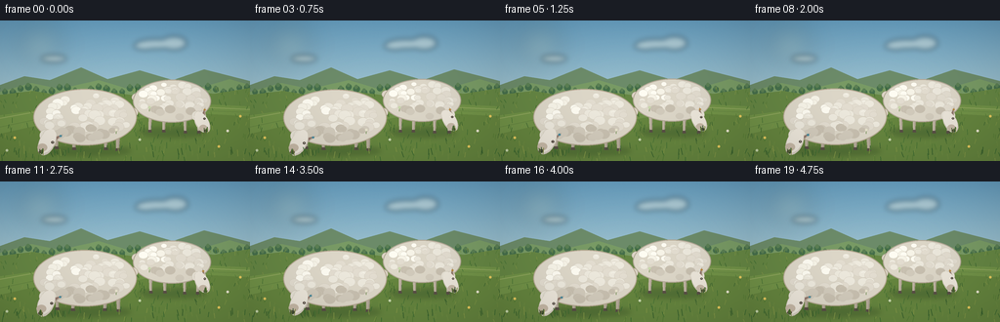
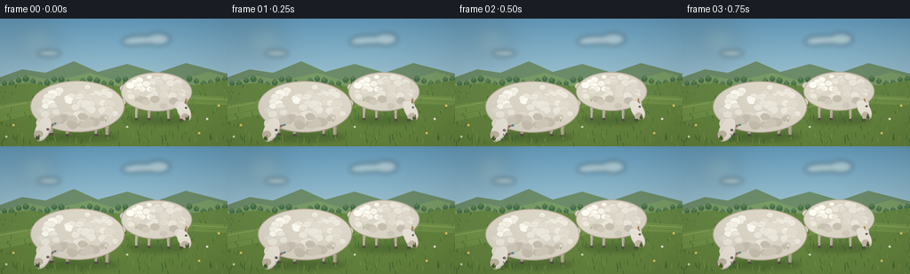

CODING AGENTS AS PIXEL WORLD MODELS
traex/GPT-5.6-Sol · instance_preservation_0017
点击播放 · 原生 RGB 像素
逐轮保存的候选
回放视频、检查图与代码变化。
每份候选均可单独播放。实际图片检查记录在下方工具轨迹中。
候选 01播放与检查图
点击播放 · 原生 RGB 像素


展开代码变化
--- 上一保存版本
+++ 本次保存版本
@@ -0,0 +1,263 @@
+from pathlib import Path
+import math
+import numpy as np
+from PIL import Image, ImageDraw, ImageFilter
+import artifact_io
+
+# Deterministic, antialiased, hand-rendered pastoral animation.
+W, H, N = 256, 144, 20
+S = 4
+rng = np.random.default_rng(1701)
+
+# Stable texture and object detail positions make the two individual sheep persist.
+noise = rng.normal(0, 1.0, (H*S, W*S)).astype(np.float32)
+
+def make_wool(seed, count, rx, ry):
+ r = np.random.default_rng(seed)
+ pts = []
+ for _ in range(count):
+ a = r.uniform(0, math.tau)
+ rad = math.sqrt(r.uniform(0, 0.91))
+ x, y = math.cos(a)*rx*rad, math.sin(a)*ry*rad
+ rr = r.uniform(4.0, 7.4) * (0.82 + 0.18*(1-rad))
+ pts.append((x, y, rr, r.uniform(0, 1)))
+ return sorted(pts, key=lambda p: p[1])
+
+WOOL_A = make_wool(41, 72, 48, 24)
+WOOL_B = make_wool(92, 48, 35, 18)
+GRASS = []
+r = np.random.default_rng(282)
+for _ in range(390):
+ x = r.uniform(-5, W+5)
+ y = r.uniform(72, H+3)
+ # Taller, denser blades close to camera.
+ length = r.uniform(1.5, 4.5) + max(0, y-91)*0.055
+ lean = r.uniform(-1.7, 1.7)
+ phase = r.uniform(0, math.tau)
+ shade = r.integers(0, 5)
+ GRASS.append((x, y, length, lean, phase, shade))
+
+FLOWERS = [(15,124,0),(233,117,1),(143,126,2),(224,133,0),(7,137,2),(119,116,1),(246,102,0),(153,93,2)]
+
+
+def C(box):
+ return tuple(int(round(v*S)) for v in box)
+
+def poly(draw, points, fill):
+ draw.polygon([(int(round(x*S)), int(round(y*S))) for x,y in points], fill=fill)
+
+def ellipse(draw, box, fill, outline=None, width=1):
+ draw.ellipse(C(box), fill=fill, outline=outline, width=max(1,int(width*S)))
+
+def line(draw, points, fill, width=1):
+ draw.line([(int(round(x*S)),int(round(y*S))) for x,y in points], fill=fill, width=max(1,int(width*S)), joint='curve')
+
+def local(cx, cy, theta, x, y):
+ co, si = math.cos(theta), math.sin(theta)
+ return (cx + co*x - si*y, cy + si*x + co*y)
+
+def ellipse_poly(cx, cy, theta, rx, ry, n=32):
+ return [local(cx,cy,theta,rx*math.cos(a),ry*math.sin(a)) for a in np.linspace(0,math.tau,n,endpoint=False)]
+
+def draw_head(draw, cx, cy, theta, scale, identity, ear_flick=0.0):
+ # Cream-white face directed down toward the grass; identity marks stay fixed.
+ sc = scale
+ # rear ear first
+ ear_root = local(cx,cy,theta,-8*sc,-4.7*sc)
+ ep = math.sin(ear_flick)*2.5*sc
+ ear = [ear_root,
+ local(cx,cy,theta,-14*sc,-10.5*sc-ep),
+ local(cx,cy,theta,-3.5*sc,-7.3*sc)]
+ poly(draw, ear, '#b7a895')
+ inner = [local(cx,cy,theta,-7.5*sc,-5.4*sc),
+ local(cx,cy,theta,-12.4*sc,-9.0*sc-ep*.7),
+ local(cx,cy,theta,-4.8*sc,-6.8*sc)]
+ poly(draw, inner, '#8f756b')
+ # head / face with warm shaded underside
+ poly(draw, ellipse_poly(cx+0.8*math.cos(theta),cy+0.8*math.sin(theta),theta,14*sc,8.2*sc), '#d6cec0')
+ poly(draw, ellipse_poly(cx,cy-0.8*sc,theta,13.2*sc,7.4*sc), '#eee8dc')
+ # cheek plane and muzzle
+ q = local(cx,cy,theta,7.4*sc,2.2*sc)
+ ellipse(draw,(q[0]-5*sc,q[1]-4*sc,q[0]+5*sc,q[1]+4*sc),'#c8baa8')
+ nose = local(cx,cy,theta,12.0*sc,1.1*sc)
+ ellipse(draw,(nose[0]-2.35*sc,nose[1]-1.7*sc,nose[0]+2.35*sc,nose[1]+1.7*sc),'#544941')
+ # nostril / mouth
+ nost = local(cx,cy,theta,13.2*sc,0.45*sc)
+ ellipse(draw,(nost[0]-.45*sc,nost[1]-.35*sc,nost[0]+.45*sc,nost[1]+.35*sc),'#211f1c')
+ m1 = local(cx,cy,theta,11.4*sc,3.0*sc); m2 = local(cx,cy,theta,14.1*sc,3.2*sc)
+ line(draw,[m1,m2],'#6e554c',.65)
+ # eye and a tiny highlight, always on the visible side
+ eye = local(cx,cy,theta,-2.0*sc,-5.0*sc)
+ ellipse(draw,(eye[0]-1.45*sc,eye[1]-1.25*sc,eye[0]+1.45*sc,eye[1]+1.25*sc),'#4c4239')
+ ellipse(draw,(eye[0]-.35*sc,eye[1]-.45*sc,eye[0]+.35*sc,eye[1]+.25*sc),'#fffdf0')
+ # Two unobtrusive, persistent identity cues: blue tag on A, ochre tag on B.
+ tagc = '#4d8b9d' if identity == 'A' else '#b8873e'
+ tag = local(cx,cy,theta,-11.4*sc,-9.2*sc-ep*.7)
+ ellipse(draw,(tag[0]-1.25*sc,tag[1]-1.05*sc,tag[0]+1.25*sc,tag[1]+1.05*sc),tagc)
+
+
+def draw_sheep(img, frame, identity, cx, cy, rx, ry, scale, wool, facing_theta):
+ d = ImageDraw.Draw(img)
+ t = frame / 4.0
+ phase = 0.2 if identity == 'A' else 2.0
+ breathe = math.sin(t*2.25 + phase)
+ body_y = cy + breathe*0.45
+ # Fixed individual grazing rhythms: heads remain down and near the turf.
+ graze = math.sin(t*2.1 + phase)
+ bob = 0.8*math.sin(t*3.15 + phase)
+ if identity == 'A':
+ hc = (cx-39 + graze*2.1, body_y+25+bob)
+ theta = facing_theta + .045*math.sin(t*2.0)
+ neck = (cx-34, body_y+12)
+ legs = [(-29,6, -1),(-12,5,1),(21,5,-1),(34,4,1)]
+ ground = 134
+ body_outline = '#b7aa94'
+ else:
+ hc = (cx+29 + graze*1.7, body_y+21+bob*.65)
+ theta = facing_theta - .04*math.sin(t*1.8+.4)
+ neck = (cx+27, body_y+9)
+ legs = [(-22,4,-1),(-8,4,1),(13,3,-1),(27,3,1)]
+ ground = 115
+ body_outline = '#b4aa98'
+
+ # Soft contact shadow anchors each animal.
+ shadow = Image.new('RGBA', img.size, (0,0,0,0)); sd = ImageDraw.Draw(shadow)
+ ellipse(sd,(cx-rx*.84,ground-5,cx+rx*.88,ground+4),(37,63,34,72))
+ shadow = shadow.filter(ImageFilter.GaussianBlur(2.5*S))
+ img.alpha_composite(shadow)
+ d = ImageDraw.Draw(img)
+
+ # Four stable legs behind the fleece. Slight gait shifts never swap identities.
+ for j,(ox,lift,sgn) in enumerate(legs):
+ shift = 0.8*math.sin(t*1.4 + phase + j*1.7) * sgn
+ x0 = cx+ox
+ y0 = body_y+ry*.54
+ footy = ground-lift+2
+ x1 = x0+shift
+ leg_fill = '#b8ad9c' if identity=='A' else '#c2b7a5'
+ poly(d,[(x0-2.2*scale,y0),(x0+2.0*scale,y0),(x1+1.45*scale,footy),(x1-1.5*scale,footy)],leg_fill)
+ # shadow side and split dark hoof
+ line(d,[(x0+1.2*scale,y0+2),(x1+.8*scale,footy-1)],'#938878',.7)
+ poly(d,[(x1-1.8*scale,footy-1),(x1+1.7*scale,footy-1),(x1+2.3*scale,footy+1.5),(x1-2.0*scale,footy+1.5)],'#594f46')
+
+ # Short woolly tail, with individualized twitch timing.
+ tail_side = 1 if identity=='A' else -1
+ tx = cx + tail_side*rx*.91
+ ty = body_y-5
+ twitch = math.sin(t*4.0+phase) * (1.3 if (frame//4)%2==0 else .35)
+ ellipse(d,(tx-6*scale,ty-5*scale+twitch,tx+6*scale,ty+5*scale+twitch),'#ddd6c7',body_outline,.6)
+
+ # Base fleece silhouette plus scalloped stable wool clusters.
+ ellipse(d,(cx-rx,body_y-ry,cx+rx,body_y+ry),'#ded8c9',body_outline,1.15)
+ for k,(ox,oy,rr,v) in enumerate(wool):
+ # highlights face the sun, warm greys sit under the belly
+ yy = oy/ry
+ if yy > .36:
+ col = '#d3ccbd' if v < .63 else '#c9c1b1'
+ elif ox < -rx*.15 and oy < 0:
+ col = '#fffdf3' if v < .62 else '#f8f5e9'
+ else:
+ col = '#eeeade' if v < .64 else '#e4ded1'
+ rr2 = rr*scale*(1 + .025*breathe)
+ px,py = cx+ox,body_y+oy
+ ellipse(d,(px-rr2,py-rr2*.78,px+rr2,py+rr2*.78),col,'#d2cbbc',.35)
+ if k % 7 == 0 and oy < 5:
+ # crescent-like highlight
+ line(d,[(px-rr2*.45,py-rr2*.25),(px,py-rr2*.43),(px+rr2*.36,py-rr2*.22)],'#fffef5',.55)
+
+ # Wool collar visually connects body and head while head stays in front.
+ collarx = (neck[0]+hc[0])*.50; collary=(neck[1]+hc[1])*.50
+ for q in [-1,0,1]:
+ ellipse(d,(collarx-7*scale+q*3.3*scale,collary-6*scale,collarx+4*scale+q*3.3*scale,collary+6*scale),'#e8e3d6','#c5bbaa',.45)
+ draw_head(d,hc[0],hc[1],theta,scale,identity,t*3.1+phase)
+
+ # Grass currently being pulled at each muzzle emphasizes "eating".
+ nose = local(hc[0],hc[1],theta,12*scale,1*scale)
+ for j in range(4):
+ base=(nose[0]+(j-1.5)*1.15,nose[1]+2.2+j%2)
+ tip=(base[0]+math.sin(t*3+j)*1.1,base[1]-5.0-j*.45)
+ line(d,[base,tip],['#42612e','#607b35','#2f572a','#7a8d3e'][j],.75)
+
+
+def render(frame):
+ t=frame/4.0
+ hh,ww=H*S,W*S
+ yy=np.linspace(0,1,hh,dtype=np.float32)[:,None]
+ # Calm blue sky gradient with subtle static film-like texture.
+ top=np.array([104,161,195],dtype=np.float32); bottom=np.array([213,226,216],dtype=np.float32)
+ sky=top[None,None,:]*(1-yy[:,:,None])+bottom[None,None,:]*yy[:,:,None]
+ sky=np.repeat(sky,ww,axis=1)
+ sky += noise[:,:,None]*0.9
+ arr=np.clip(sky,0,255).astype(np.uint8)
+ img=Image.fromarray(arr,'RGB').convert('RGBA')
+ d=ImageDraw.Draw(img)
+
+ # Sun haze and a pair of soft distant clouds (not additional subjects).
+ haze=Image.new('RGBA',img.size,(0,0,0,0)); hd=ImageDraw.Draw(haze)
+ ellipse(hd,(20,7,62,43),(255,245,193,42))
+ haze=haze.filter(ImageFilter.GaussianBlur(12*S)); img.alpha_composite(haze)
+ cloud=Image.new('RGBA',img.size,(0,0,0,0)); cd=ImageDraw.Draw(cloud)
+ drift=t*.45
+ for x,y,rx,ry in [(160+drift,24,21,5),(178+drift,23,13,7),(148+drift,26,11,4),(55+drift*.5,39,13,3.5)]:
+ ellipse(cd,(x-rx,y-ry,x+rx,y+ry),(245,246,233,105))
+ cloud=cloud.filter(ImageFilter.GaussianBlur(2.7*S)); img.alpha_composite(cloud)
+ d=ImageDraw.Draw(img)
+
+ # Layered distant ridges and sunlit pasture.
+ poly(d,[(0,66),(25,57),(51,61),(83,48),(110,60),(143,51),(177,61),(209,50),(256,62),(256,91),(0,91)],'#6d8c6a')
+ poly(d,[(0,73),(32,64),(61,70),(101,61),(131,70),(166,62),(208,68),(235,60),(256,66),(256,93),(0,93)],'#799b65')
+ # Distant tree dots / hedgerow
+ for x in range(-3,260,8):
+ y=71+3*math.sin(x*.17)
+ rr=2.8+(x%5)*.15
+ ellipse(d,(x-rr,y-rr,x+rr,y+rr),'#466f4c')
+ ellipse(d,(x-rr*.65,y-rr*1.3,x+rr*.45,y),'#5c8054')
+ poly(d,[(0,76),(34,72),(69,78),(101,72),(141,77),(179,70),(219,75),(256,69),(256,144),(0,144)],'#668744')
+ # broad field bands and faint mowing contours
+ poly(d,[(0,97),(59,89),(112,94),(175,84),(256,88),(256,144),(0,144)],'#729348')
+ poly(d,[(0,116),(63,102),(116,105),(180,94),(256,98),(256,144),(0,144)],'#66863f')
+ line(d,[(0,100),(50,91),(111,97),(174,87),(256,91)],'#91a85f',1.0)
+ line(d,[(0,109),(62,96),(115,101),(178,91),(256,94)],'#597a3b',.7)
+
+ # Mid/foreground grass texture behind the animals.
+ palette=['#3e6c32','#547b35','#6f8c42','#365f2c','#829747']
+ sway=math.sin(t*1.55)*.7
+ for x,y,l,lean,ph,shade in GRASS:
+ if y > 132: continue
+ parallax=0.20*math.sin(t*.45)
+ tipx=x+lean+sway*math.sin(ph)
+ line(d,[(x+parallax,y),(tipx+parallax,y-l)],palette[shade],.52 if y<100 else .72)
+
+ # The farther sheep is rendered first; the foreground individual remains distinct.
+ draw_sheep(img,frame,'B',176,82,40,22,.82,WOOL_B,math.radians(61))
+ draw_sheep(img,frame,'A',87,99,53,29,1.0,WOOL_A,math.radians(116))
+ d=ImageDraw.Draw(img)
+
+ # Foreground blades overlap hooves for convincing contact with the pasture.
+ for x,y,l,lean,ph,shade in GRASS:
+ if y <= 132: continue
+ sway2=math.sin(t*1.55+ph)*1.0
+ line(d,[(x,y),(x+lean+sway2,y-l)],palette[shade],.8)
+ for x,y,k in FLOWERS:
+ stem='#4e772e'; line(d,[(x,y),(x+.3,y-4)],stem,.55)
+ col=['#e7c95d','#e9e5ce','#c7d7ab'][k]
+ ellipse(d,(x-1.2,y-5.2,x+1.2,y-2.8),col)
+
+ # Vignette for depth and cinematic framing.
+ rgba=np.asarray(img.convert('RGB')).astype(np.float32)
+ Y,X=np.mgrid[0:hh,0:ww]
+ nx=(X-ww/2)/(ww/2); ny=(Y-hh/2)/(hh/2)
+ vig=np.clip(1-0.075*(nx*nx+ny*ny),.84,1.0)[:,:,None]
+ rgba=np.clip(rgba*vig,0,255).astype(np.uint8)
+ out=Image.fromarray(rgba).resize((W,H),Image.Resampling.LANCZOS).convert('RGB')
+ return np.asarray(out,dtype=np.uint8)
+
+
+def main():
+ frames=np.stack([render(i) for i in range(N)],axis=0)
+ assert frames.shape==(20,144,256,3) and frames.dtype==np.uint8
+ artifact_io.save(frames,Path(__file__).resolve().parent)
+ print('saved',frames.shape,frames.dtype,'range',int(frames.min()),int(frames.max()))
+
+if __name__=='__main__':
+ main()
可观测工具轨迹
实际执行的命令与返回图片。
命令 1exit 0
/bin/bash -lc "cat prompt.txt && printf '\\n--- GENERATION_RULES.md ---\\n' && cat GENERATION_RULES.md"
命令 2exit 0
/bin/bash -lc "cat task_spec.json && printf '\\n--- FILES ---\\n' && find . -maxdepth 2 -type f -printf '%p\\n' | sort"
命令 3exit 0
/bin/bash -lc "command -v ffmpeg || true; command -v python3 || true; python3 - <<'PY' mods=['PIL','numpy','cv2','cairo','moviepy'] for m in mods: try: x=__import__(m); print(m,'OK',getattr(x,'__version__','')) except Exception as e: print(m,'NO',e) PY"
命令 4exit 0
/bin/bash -lc 'cat artifact_io.py'
命令 5exit 0
/bin/bash -lc "cat > generate.py <<'PY'
from pathlib import Path
import math
import numpy as np
from PIL import Image, ImageDraw, ImageFilter
import artifact_io
# Deterministic, antialiased, hand-rendered pastoral animation.
W, H, N = 256, 144, 20
S = 4
rng = np.random.default_rng(1701)
# Stable texture and object detail positions make the two individual sheep persist.
noise = rng.normal(0, 1.0, (H*S, W*S)).astype(np.float32)
def make_wool(seed, count, rx, ry):
r = np.random.default_rng(seed)
pts = []
for _ in range(count):
a = r.uniform(0, math.tau)
rad = math.sqrt(r.uniform(0, 0.91))
x, y = math.cos(a)*rx*rad, math.sin(a)*ry*rad
rr = r.uniform(4.0, 7.4) * (0.82 + 0.18*(1-rad))
pts.append((x, y, rr, r.uniform(0, 1)))
return sorted(pts, key=lambda p: p[1])
WOOL_A = make_wool(41, 72, 48, 24)
WOOL_B = make_wool(92, 48, 35, 18)
GRASS = []
r = np.random.default_rng(282)
for _ in range(390):
x = r.uniform(-5, W+5)
y = r.uniform(72, H+3)
# Taller, denser blades close to camera.
length = r.uniform(1.5, 4.5) + max(0, y-91)*0.055
lean = r.uniform(-1.7, 1.7)
phase = r.uniform(0, math.tau)
shade = r.integers(0, 5)
GRASS.append((x, y, length, lean, phase, shade))
FLOWERS = [(15,124,0),(233,117,1),(143,126,2),(224,133,0),(7,137,2),(119,116,1),(246,102,0),(153,93,2)]
def C(box):
return tuple(int(round(v*S)) for v in box)
def poly(draw, points, fill):
draw.polygon([(int(round(x*S)), int(round(y*S))) for x,y in points], fill=fill)
def ellipse(draw, box, fill, outline=None, width=1):
draw.ellipse(C(box), fill=fill, outline=outline, width=max(1,int(width*S)))
def line(draw, points, fill, width=1):
draw.line([(int(round(x*S)),int(round(y*S))) for x,y in points], fill=fill, width=max(1,int(width*S)), joint='curve')
def local(cx, cy, theta, x, y):
co, si = math.cos(theta), math.sin(theta)
return (cx + co*x - si*y, cy + si*x + co*y)
def ellipse_poly(cx, cy, theta, rx, ry, n=32):
return [local(cx,cy,theta,rx*math.cos(a),ry*math.sin(a)) for a in np.linspace(0,math.tau,n,endpoint=False)]
def draw_head(draw, cx, cy, theta, scale, identity, ear_flick=0.0):
# Cream-white face directed down toward the grass; identity marks stay fixed.
sc = scale
# rear ear first
ear_root = local(cx,cy,theta,-8*sc,-4.7*sc)
ep = math.sin(ear_flick)*2.5*sc
ear = [ear_root,
local(cx,cy,theta,-14*sc,-10.5*sc-ep),
local(cx,cy,theta,-3.5*sc,-7.3*sc)]
poly(draw, ear, '#b7a895')
inner = [local(cx,cy,theta,-7.5*sc,-5.4*sc),
local(cx,cy,theta,-12.4*sc,-9.0*sc-ep*.7),
local(cx,cy,theta,-4.8*sc,-6.8*sc)]
poly(draw, inner, '#8f756b')
# head / face with warm shaded underside
poly(draw, ellipse_poly(cx+0.8*math.cos(theta),cy+0.8*math.sin(theta),theta,14*sc,8.2*sc), '#d6cec0')
poly(draw, ellipse_poly(cx,cy-0.8*sc,theta,13.2*sc,7.4*sc), '#eee8dc')
# cheek plane and muzzle
q = local(cx,cy,theta,7.4*sc,2.2*sc)
ellipse(draw,(q[0]-5*sc,q[1]-4*sc,q[0]+5*sc,q[1]+4*sc),'#c8baa8')
nose = local(cx,cy,theta,12.0*sc,1.1*sc)
ellipse(draw,(nose[0]-2.35*sc,nose[1]-1.7*sc,nose[0]+2.35*sc,nose[1]+1.7*sc),'#544941')
# nostril / mouth
nost = local(cx,cy,theta,13.2*sc,0.45*sc)
ellipse(draw,(nost[0]-.45*sc,nost[1]-.35*sc,nost[0]+.45*sc,nost[1]+.35*sc),'#211f1c')
m1 = local(cx,cy,theta,11.4*sc,3.0*sc); m2 = local(cx,cy,theta,14.1*sc,3.2*sc)
line(draw,[m1,m2],'#6e554c',.65)
# eye and a tiny highlight, always on the visible side
eye = local(cx,cy,theta,-2.0*sc,-5.0*sc)
ellipse(draw,(eye[0]-1.45*sc,eye[1]-1.25*sc,eye[0]+1.45*sc,eye[1]+1.25*sc),'#4c4239')
ellipse(draw,(eye[0]-.35*sc,eye[1]-.45*sc,eye[0]+.35*sc,eye[1]+.25*sc),'#fffdf0')
# Two unobtrusive, persistent identity cues: blue tag on A, ochre tag on B.
tagc = '#4d8b9d' if identity == 'A' else '#b8873e'
tag = local(cx,cy,theta,-11.4*sc,-9.2*sc-ep*.7)
ellipse(draw,(tag[0]-1.25*sc,tag[1]-1.05*sc,tag[0]+1.25*sc,tag[1]+1.05*sc),tagc)
def draw_sheep(img, frame, identity, cx, cy, rx, ry, scale, wool, facing_theta):
d = ImageDraw.Draw(img)
t = frame / 4.0
phase = 0.2 if identity == 'A' else 2.0
breathe = math.sin(t*2.25 + phase)
body_y = cy + breathe*0.45
# Fixed individual grazing rhythms: heads remain down and near the turf.
graze = math.sin(t*2.1 + phase)
bob = 0.8*math.sin(t*3.15 + phase)
if identity == 'A':
hc = (cx-39 + graze*2.1, body_y+25+bob)
theta = facing_theta + .045*math.sin(t*2.0)
neck = (cx-34, body_y+12)
legs = [(-29,6, -1),(-12,5,1),(21,5,-1),(34,4,1)]
ground = 134
body_outline = '#b7aa94'
else:
hc = (cx+29 + graze*1.7, body_y+21+bob*.65)
theta = facing_theta - .04*math.sin(t*1.8+.4)
neck = (cx+27, body_y+9)
legs = [(-22,4,-1),(-8,4,1),(13,3,-1),(27,3,1)]
ground = 115
body_outline = '#b4aa98'
# Soft contact shadow anchors each animal.
shadow = Image.new('RGBA', img.size, (0,0,0,0)); sd = ImageDraw.Draw(shadow)
ellipse(sd,(cx-rx*.84,ground-5,cx+rx*.88,ground+4),(37,63,34,72))
shadow = shadow.filter(ImageFilter.GaussianBlur(2.5*S))
img.alpha_composite(shadow)
d = ImageDraw.Draw(img)
# Four stable legs behind the fleece. Slight gait shifts never swap identities.
for j,(ox,lift,sgn) in enumerate(legs):
shift = 0.8*math.sin(t*1.4 + phase + j*1.7) * sgn
x0 = cx+ox
y0 = body_y+ry*.54
footy = ground-lift+2
x1 = x0+shift
leg_fill = '#b8ad9c' if identity=='A' else '#c2b7a5'
poly(d,[(x0-2.2*scale,y0),(x0+2.0*scale,y0),(x1+1.45*scale,footy),(x1-1.5*scale,footy)],leg_fill)
# shadow side and split dark hoof
line(d,[(x0+1.2*scale,y0+2),(x1+.8*scale,footy-1)],'#938878',.7)
poly(d,[(x1-1.8*scale,footy-1),(x1+1.7*scale,footy-1),(x1+2.3*scale,footy+1.5),(x1-2.0*scale,footy+1.5)],'#594f46')
# Short woolly tail, with individualized twitch timing.
tail_side = 1 if identity=='A' else -1
tx = cx + tail_side*rx*.91
ty = body_y-5
twitch = math.sin(t*4.0+phase) * (1.3 if (frame//4)%2==0 else .35)
ellipse(d,(tx-6*scale,ty-5*scale+twitch,tx+6*scale,ty+5*scale+twitch),'#ddd6c7',body_outline,.6)
# Base fleece silhouette plus scalloped stable wool clusters.
ellipse(d,(cx-rx,body_y-ry,cx+rx,body_y+ry),'#ded8c9',body_outline,1.15)
for k,(ox,oy,rr,v) in enumerate(wool):
# highlights face the sun, warm greys sit under the belly
yy = oy/ry
if yy > .36:
col = '#d3ccbd' if v < .63 else '#c9c1b1'
elif ox < -rx*.15 and oy < 0:
col = '#fffdf3' if v < .62 else '#f8f5e9'
else:
col = '#eeeade' if v < .64 else '#e4ded1'
rr2 = rr*scale*(1 + .025*breathe)
px,py = cx+ox,body_y+oy
ellipse(d,(px-rr2,py-rr2*.78,px+rr2,py+rr2*.78),col,'#d2cbbc',.35)
if k % 7 == 0 and oy < 5:
# crescent-like highlight
line(d,[(px-rr2*.45,py-rr2*.25),(px,py-rr2*.43),(px+rr2*.36,py-rr2*.22)],'#fffef5',.55)
# Wool collar visually connects body and head while head stays in front.
collarx = (neck[0]+hc[0])*.50; collary=(neck[1]+hc[1])*.50
for q in [-1,0,1]:
ellipse(d,(collarx-7*scale+q*3.3*scale,collary-6*scale,collarx+4*scale+q*3.3*scale,collary+6*scale),'#e8e3d6','#c5bbaa',.45)
draw_head(d,hc[0],hc[1],theta,scale,identity,t*3.1+phase)
# Grass currently being pulled at each muzzle emphasizes \"eating\".
nose = local(hc[0],hc[1],theta,12*scale,1*scale)
for j in range(4):
base=(nose[0]+(j-1.5)*1.15,nose[1]+2.2+j%2)
tip=(base[0]+math.sin(t*3+j)*1.1,base[1]-5.0-j*.45)
line(d,[base,tip],['#42612e','#607b35','#2f572a','#7a8d3e'][j],.75)
def render(frame):
t=frame/4.0
hh,ww=H*S,W*S
yy=np.linspace(0,1,hh,dtype=np.float32)[:,None]
# Calm blue sky gradient with subtle static film-like texture.
top=np.array([104,161,195],dtype=np.float32); bottom=np.array([213,226,216],dtype=np.float32)
sky=top[None,None,:]*(1-yy[:,:,None])+bottom[None,None,:]*yy[:,:,None]
sky=np.repeat(sky,ww,axis=1)
sky += noise[:,:,None]*0.9
arr=np.clip(sky,0,255).astype(np.uint8)
img=Image.fromarray(arr,'RGB').convert('RGBA')
d=ImageDraw.Draw(img)
# Sun haze and a pair of soft distant clouds (not additional subjects).
haze=Image.new('RGBA',img.size,(0,0,0,0)); hd=ImageDraw.Draw(haze)
ellipse(hd,(20,7,62,43),(255,245,193,42))
haze=haze.filter(ImageFilter.GaussianBlur(12*S)); img.alpha_composite(haze)
cloud=Image.new('RGBA',img.size,(0,0,0,0)); cd=ImageDraw.Draw(cloud)
drift=t*.45
for x,y,rx,ry in [(160+drift,24,21,5),(178+drift,23,13,7),(148+drift,26,11,4),(55+drift*.5,39,13,3.5)]:
ellipse(cd,(x-rx,y-ry,x+rx,y+ry),(245,246,233,105))
cloud=cloud.filter(ImageFilter.GaussianBlur(2.7*S)); img.alpha_composite(cloud)
d=ImageDraw.Draw(img)
# Layered distant ridges and sunlit pasture.
poly(d,[(0,66),(25,57),(51,61),(83,48),(110,60),(143,51),(177,61),(209,50),(256,62),(256,91),(0,91)],'#6d8c6a')
poly(d,[(0,73),(32,64),(61,70),(101,61),(131,70),(166,62),(208,68),(235,60),(256,66),(256,93),(0,93)],'#799b65')
# Distant tree dots / hedgerow
for x in range(-3,260,8):
y=71+3*math.sin(x*.17)
rr=2.8+(x%5)*.15
ellipse(d,(x-rr,y-rr,x+rr,y+rr),'#466f4c')
ellipse(d,(x-rr*.65,y-rr*1.3,x+rr*.45,y),'#5c8054')
poly(d,[(0,76),(34,72),(69,78),(101,72),(141,77),(179,70),(219,75),(256,69),(256,144),(0,144)],'#668744')
# broad field bands and faint mowing contours
poly(d,[(0,97),(59,89),(112,94),(175,84),(256,88),(256,144),(0,144)],'#729348')
poly(d,[(0,116),(63,102),(116,105),(180,94),(256,98),(256,144),(0,144)],'#66863f')
line(d,[(0,100),(50,91),(111,97),(174,87),(256,91)],'#91a85f',1.0)
line(d,[(0,109),(62,96),(115,101),(178,91),(256,94)],'#597a3b',.7)
# Mid/foreground grass texture behind the animals.
palette=['#3e6c32','#547b35','#6f8c42','#365f2c','#829747']
sway=math.sin(t*1.55)*.7
for x,y,l,lean,ph,shade in GRASS:
if y > 132: continue
parallax=0.20*math.sin(t*.45)
tipx=x+lean+sway*math.sin(ph)
line(d,[(x+parallax,y),(tipx+parallax,y-l)],palette[shade],.52 if y<100 else .72)
# The farther sheep is rendered first; the foreground individual remains distinct.
draw_sheep(img,frame,'B',176,82,40,22,.82,WOOL_B,math.radians(61))
draw_sheep(img,frame,'A',87,99,53,29,1.0,WOOL_A,math.radians(116))
d=ImageDraw.Draw(img)
# Foreground blades overlap hooves for convincing contact with the pasture.
for x,y,l,lean,ph,shade in GRASS:
if y <= 132: continue
sway2=math.sin(t*1.55+ph)*1.0
line(d,[(x,y),(x+lean+sway2,y-l)],palette[shade],.8)
for x,y,k in FLOWERS:
stem='#4e772e'; line(d,[(x,y),(x+.3,y-4)],stem,.55)
col=['#e7c95d','#e9e5ce','#c7d7ab'][k]
ellipse(d,(x-1.2,y-5.2,x+1.2,y-2.8),col)
# Vignette for depth and cinematic framing.
rgba=np.asarray(img.convert('RGB')).astype(np.float32)
Y,X=np.mgrid[0:hh,0:ww]
nx=(X-ww/2)/(ww/2); ny=(Y-hh/2)/(hh/2)
vig=np.clip(1-0.075*(nx*nx+ny*ny),.84,1.0)[:,:,None]
rgba=np.clip(rgba*vig,0,255).astype(np.uint8)
out=Image.fromarray(rgba).resize((W,H),Image.Resampling.LANCZOS).convert('RGB')
return np.asarray(out,dtype=np.uint8)
def main():
frames=np.stack([render(i) for i in range(N)],axis=0)
assert frames.shape==(20,144,256,3) and frames.dtype==np.uint8
artifact_io.save(frames,Path(__file__).resolve().parent)
print('saved',frames.shape,frames.dtype,'range',int(frames.min()),int(frames.max()))
if __name__=='__main__':
main()
PY
python3 generate.py"命令 6exit 0
/bin/bash -lc 'ls -lh generate.py pixels.npz index.html inspection.png transition_check.png frames/00.png frames/19.png && du -sh frames'
命令 7exit 0
/bin/bash -lc "python3 - <<'PY'
import numpy as np
from PIL import Image
from pathlib import Path
z=np.load('pixels.npz')['pixels']
print('packed tensor',z.shape,z.dtype)
files=sorted(Path('frames').glob('*.png'))
print('png count',len(files))
ims=[np.array(Image.open(f)) for f in files]
print('first/last',Image.open(files[0]).mode,ims[0].shape)
for i in range(1,len(ims)):
d=np.abs(ims[i].astype('i2')-ims[i-1].astype('i2'))
print(f'{i-1:02}->{i:02}: mean={d.mean():.3f} changed={(d.max(2)>0).mean():.3f} max={d.max()}')
PY"保存候选 1 份；完成命令 7 次；可验证图片返回 0 张。原始 API 响应与完整日志保留在本地。